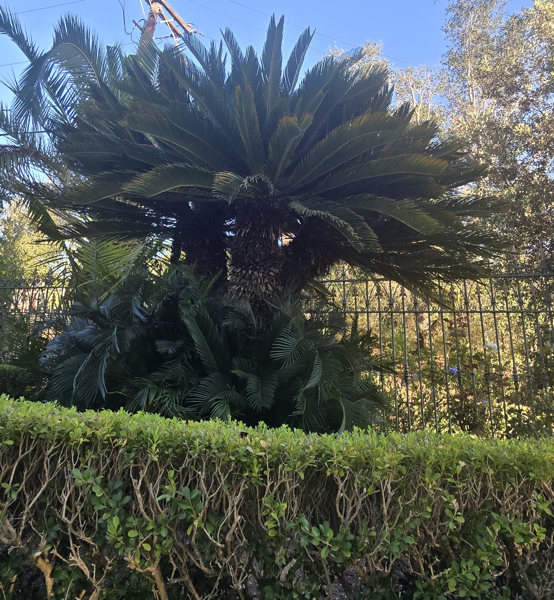
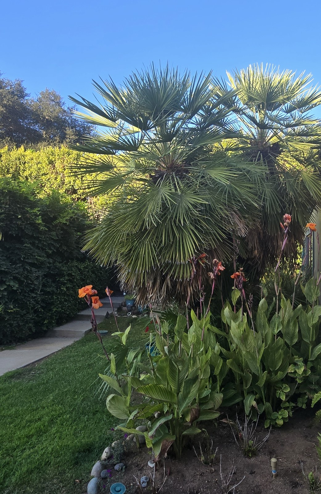
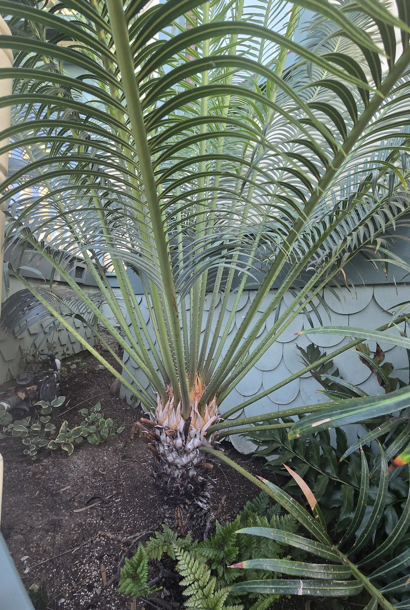
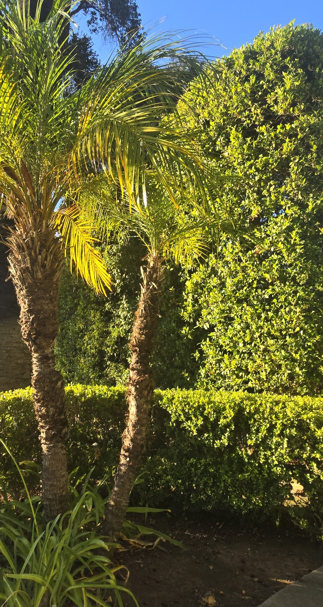

Mature palms do not always present a simple treatment question.
At a private Escondido property, I was initially asked to help evaluate relocation opportunities for several established palms. That assignment quickly became something broader: documenting the collection, separating individual plants from multi-trunk groupings, identifying unfamiliar cycads, researching realistic relocation markets and protecting the property’s Canary Island date palms while that work continues.
A conventional landscape company may trim the palms. A pesticide company may treat them. A plant broker may look for a buyer. San Diego Palm Protection approaches the property as one connected palm-management problem.
That means asking:
- Which plants have genuine specimen value?
- Which can realistically survive excavation and relocation?
- Which buyers have the equipment and experience to move them responsibly?
- Which palms are unlikely to sell but remain worth protecting?
- What treatment and condition records should follow the plants?
- What outcome actually serves the property owner?

This collection includes a multi-trunk Mediterranean fan palm, pygmy-date groupings, multi-headed sagos and an established Encephalartos cycad requiring specialist identification. Each plant belongs in a different market and carries different relocation economics. Treating them as one undifferentiated group would make a successful outcome less likely.


This is what palm stewardship means to us: identification, treatment, monitoring, documentation and practical decision support—with one accountable local specialist helping the owner navigate the entire problem.
San Diego Palm Protection provides owner-led palm stewardship throughout North County San Diego.
Call John Krause at (262) 492-3135 or visit sandiegopalmprotection.com.